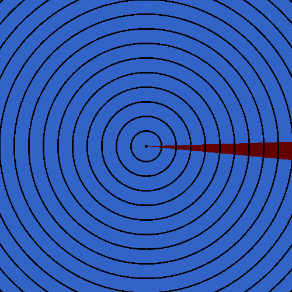
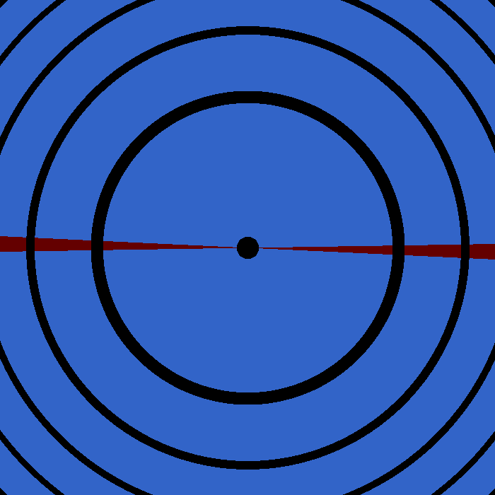
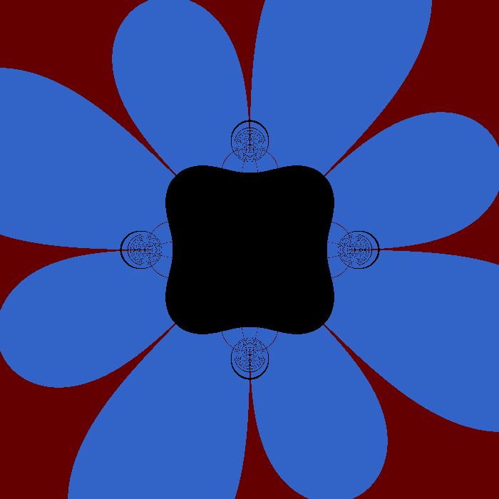
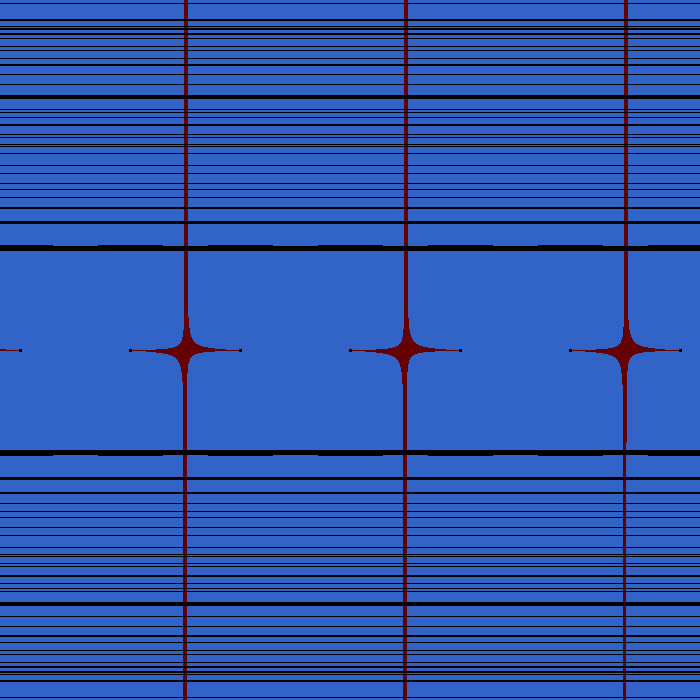

I initially came up with the idea for this document when I was reading Stein and Shakarchi’s Complex Analysis in high school. I don’t have the code I wrote back then, but there’s an older version I wrote some time in between on my github. I haven’t seen this idea anywhere else, but I wouldn’t be surprised if someone else came up with it as well.
I was considering writing more of an introduction to the subject, but for now, I decided to just feature the images with some light commentary.
The code for creating the images as well as the html page is on the github repository,
https://github.com/yahya-tamur/complex-gifs
It should be easy to experiment and create your own images.
Thanks for reading!
I’ll refer to functions that take complex numbers and return complex numbers as complex functions. These are hard to graph, since they essentially take two variables (the real part and the imaginary part of a complex number) and return two variables (the real part and the imaginary part of a complex number). So, the most straightforward way to graph them would be four dimensional.
We can graph the real part and the imaginary part of the return value separately as functions of two variables, but these are often related in subtle ways.
One common way these functions can be defined is called domain coloring. We write complex numbers in polar form \((re^{i\theta } = r\cos (\theta ) + ir\sin (\theta ))\), and assign a color to every value of \(\theta \). We then graph the complex plane, assigning every point \((a,b)\) the color \(f(a + bi)\) represents. The following image graphs \(f(z) = z\), and we can see that here, \(\theta = 0\) is assigned red, \(\theta = \frac {2\pi }{3}\) is green, \(\theta = \pi \) is somewhere between blue and green.
The reason it’s a color wheel and not something like a gradient is because the colors can be the same value at \(0\) and \(2\pi \), so similar values of \(\theta \) are always similar colors.
Also, no information about the \(r\) in \(re^{i\theta }\) is represented in this image, so sometimes contour lines are added. The image below colors a pixel black if \(r\) is close to a whole number, resulting in contour lines, similar to topographical maps. The gradient also goes from red to white from \(0\) to \(2\pi \) to illustrate the previous point.
The novelty of this document is that instead of color, we represent each value of \(\theta \) as a point in time in a moving image. In the image below, \(\theta \approx 0\) is highlighted at first, and \(\theta \approx \pi \) is highlighted halfway through. Similarly to the first approach, similar values of \(\theta \) are treated similarly, since the difference between the last and the first frames is equivalent to the difference between the first and second frames.

It can be hard to tell which direction \(|f(z)|\) increases by looking only at the contour lines. In the image below, the contour lines move from lower to higher values.

While graphing \(\frac {1}{z}\), notice that\(\frac {1}{re^{\theta i}} = \frac {1}{r}e^{-\theta i}\), so in addition to the contour lines moving in instead of out, the selected pixels moves clockwise instead of counterclockwise:

\(f(z) = \frac {1}{z}\)
Here’s \(f(z) = z\), graphed on the stereographic projection of the complex plane onto a sphere:
Notice that the function \(f(z) = z\) looks like \(f(z) = \frac {1}{z}\) on the opposite pole, which represents the point at infinity.
Consider the linear function \(a(z-b)\). \(z-b\) is exactly the function we’ve seen before except the origin moved to \(b\), and since \(r_1e^{i\theta _1} \times r_2e^{i\theta _2} = (r_1 r_2) e^{i(\theta _1 + \theta _2)}\), multiplying by \(a\) has the effect of the rotation starting at a different angle, and the contour lines having a different spacing:

\(f(z)=5i(z-2)\)

\(f(z)=0.5(z-(3+2i))\)
Since two unique values of \(\theta \), on opposite sides of the unit circle, solve \(z^2 = C\), here’s what \(f(z) = z^2\) looks like:

\(f(z)=z^2\)
The contour lines are created by checking if
\[|f(z)| \mod \text {(contour width)} < \text {some small value}\]
So, having a thicker contour line means there are more pixels within this small value. In other words, a thicker contour line means \(|f(z)|\) is increasing more slowly. In \(z^2\) above, the contour lines get thinner and thinner, since the slope of \(|f(z)|\) increases towards the outside, and in the graphs of the linear functions, the contour lines have the same thickness throughout, since \(|f(z)|\) increases at a constant rate. This is also the reason the red lines get thicker at a constant rate as they go towards the outside.
And here’s what it looks like there are two roots next to each other instead of a single double root:

\(f(z)=z^2+1\)

\(f(z)=z^3\)
\(f(z)=\frac {1}{z^3}\)

\(f(z)=z^7\)
Every holomorphic function is equal to a power series, however this doesn’t mean they always look like a countable set of roots. Below, we have increasing partial sums for \(e^z = \sum _{n=1}^\infty \frac {z^n}{n!}\), graphed on the same scale.
Notice that the function below goes to \(1\) as it goes to \(1\) as \(|z|\) goes to infinity, so contour lines kind of wrap around the point at infinity.

\(f(z)=\left (\frac {z^4}{(z-2)(z+2)(z-2i)(z+2i)}\right )^5\)
And here’s what something like that looks on the sphere:

\(f(z)=\frac {z}{1-z}\)
The unit circle becomes the equator on the stereographic projection, so the pole is on the equator in that image.

\(f(z)=\frac {z}{0.5-z}\)

\(f(z)=\frac {z^4}{(z - 0.5)(z + 0.5)(z - 0.5i)(z + 0.5i)}\)

\(f(z)=\frac {(z-i)^2(z-4i)^3(z-2)^5}{z+i}\)
Sin looks like a countable set of roots where you would expect them:

\(f(z)=\sin (z)\)
Here are partial sums of the power series of \(e^z\):

\(f(z) = \sum _{n=0}^5 \frac {z^n}{n!}\)

\(f(z) = \sum _{n=0}^{10} \frac {z^n}{n!}\)
\(f(z) = \sum _{n=0}^{20} \frac {z^n}{n!}\)

\(f(z) = e^z = \sum _{n=0}^\infty \frac {z^n}{n!}\)
Notice that the \(n\)’th partial sum has \(n\) roots (every complex polynomial of degree \(n\) has \(n\) roots counting multiplicities), while \(e^z\) has no roots.
The power series doesn’t converge uniformly, so every partial sum will be closer to the limit in the center and pretty far from it towards the outside. You can also see this by graphing \(e^x\) as a funtion of real numbers.
About the graph of \(e^z\), \(f(a+bi) = e^{a+bi}\) has \(r = e^a\) and \(\theta = b\), so there are red contours moving up at a constant rate, and black contours moving right, getting exponentially thinner.
\(e^{\frac {1}{z}}\) has a very common example of an essential singularity, which is a point around which the function is pretty well-behaved (holomorphic), but on which, the function goes to infinity unlike \(\frac {1}{z^n}\) for any \(n\).

\(f(z)=e^{\frac {1}{z}}\)
On the sphere, the point at infinity of \(e^z\) would look like this. In the image below, the sphere is rotated in the opposite direction to the spheres we’ve seen before, so the origin is out of view.

\(f(z)=e^{z}\)
Here’s \(\ln (x)\) with two different branch cuts:
\(f(z)=e^z\)

\(f(z)=e^{e^z}\)
\(f(z)=e^{e^{e^z}}\)
\(f(z)=e^{e^{e^{e^z}}}\)

\(f(z)=e^{e^{e^{e^{e^z}}}}\)
This next one is in domain coloring again:

\(f(z)=\sum _{k=0}^{300} \frac {e^{2^k z}}{1.1^k}\)
\(f(x) = \sum _{k=0}^\infty \frac {e^{i2^kx}}{2^{\alpha k}}\) is continuous but nowhere differentiable for \(0 < \alpha < 1\), as a function that takes a real number and returns a complex number. The function \(f(a+bi) = \sum _{k=0}^\infty \frac {e^{2^k(a+bi)}}{2^{\alpha k}}\) clearly converges faster with negative \(a\) and diverges with positive \(a\).